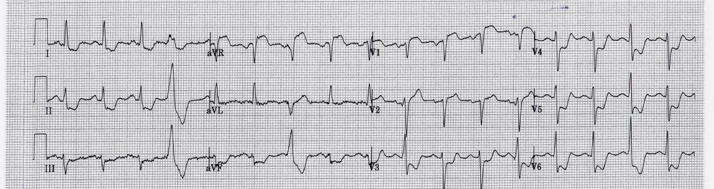
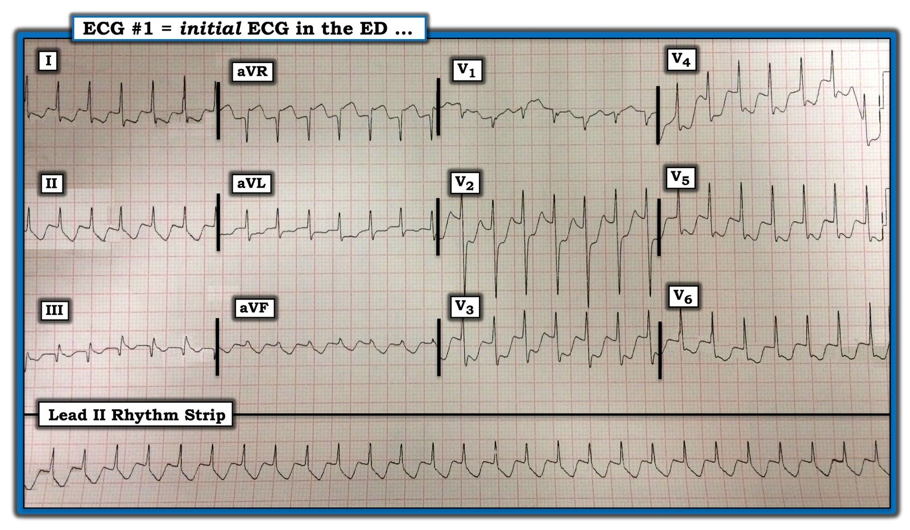
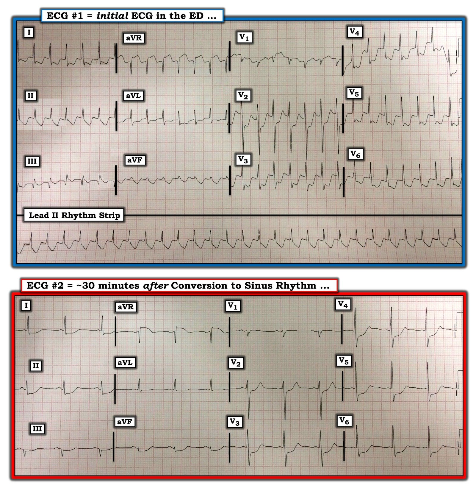

09/03/2020 — ST chênh lên ở chuyển đạo aVR có chỉ điểm tắc mạch vành cấp không?
Bản dịch tiếng Việt của bài "Does ST Elevation in lead aVR indicate acute coronary occlusion?" – Dr. Smith’s ECG Blog. Giữ nguyên toàn bộ 5 hình ảnh của bản gốc.
Một bài báo công bố hồi tháng Một vừa qua cho thấy điều tôi đã nói từ nhiều năm nay: ST chênh lên (ST elevation) ở aVR, kèm ST chênh xuống lan tỏa, KHÔNG phải là dấu hiệu của tắc thân chung động mạch vành trái (left main), hay của bất kỳ tình trạng tắc mạch vành cấp nào (đó không phải là OMI).


Trong bối cảnh lâm sàng phù hợp, đây là dấu hiệu của ACS kèm thiếu máu cục bộ dưới nội tâm mạc. Hình ảnh này cũng có thể do LVH hoặc do thiếu máu cục bộ dưới nội tâm mạc vì bất kỳ nguyên nhân nào gây mất cân bằng cung-cầu (giảm thể tích tuần hoàn kèm bệnh mạch vành, nhịp nhanh nặng, xuất huyết tiêu hóa kèm thiếu máu, hẹp van động mạch chủ, v.v.). Nếu do ACS, thủ phạm thường là thân chung động mạch vành trái, LAD, hoặc bất kỳ động mạch nào trong bối cảnh bệnh 3 nhánh mạch vành nặng (dù vậy, trong nghiên cứu mới này, không ca nào do thân chung hay LAD!). ST chênh lên ở aVR là thay đổi soi gương (reciprocal) của ST chênh xuống lan tỏa. Khác với STEMI, nó không phải do thiếu máu cục bộ dưới thượng tâm mạc của vùng cơ tim nằm bên dưới chuyển đạo — không có cơ tim thất nào nằm dưới aVR; thay vào đó, chỉ có các tâm nhĩ.
Nếu do ACS, đôi khi có thể điều trị nội khoa bằng nitroglycerin, heparin và thuốc kháng tiểu cầu, rồi chụp mạch vành sau nếu toàn bộ thiếu máu cục bộ đã hết. Thông thường, (một lần nữa, chỉ khi do ACS), thực sự tốt hơn là đưa bệnh nhân vào phòng thông tim (cath lab) cấp cứu.
Hướng dẫn ACC/AHA, tính đến năm 2013 và lần đầu tiên, khuyến cáo dùng thuốc tiêu sợi huyết cho ACS có hình ảnh điện tâm đồ này nếu không có sẵn PCI. (Tuy nhiên, khuyến cáo này xuất phát từ quan niệm cho rằng dấu hiệu điện tâm đồ này là dấu hiệu của tắc mạch). Tôi đồng ý rằng nên dùng thuốc tiêu sợi huyết nếu thiếu máu cục bộ kháng trị với điều trị nội khoa và bệnh nhân ở rất xa một trung tâm PCI.
Điều quan trọng cần biết là với kiểu thiếu máu cục bộ này, thường không có rối loạn vận động thành, vì không có thành nào bị thiếu máu cục bộ xuyên thành.
Đây là một bài viết từ năm 2014:
ST Elevation in Lead aVR, with diffuse ST depression, does not represent left main occlusion (ST chênh lên ở chuyển đạo aVR, kèm ST chênh xuống lan tỏa, không phản ánh tắc thân chung động mạch vành trái)
Giờ đây đã có một bài báo công bố năm 2019 chứng minh điều này một cách không còn nghi ngờ gì nữa, dù cũng cho thấy rõ rằng hình ảnh này đi kèm tỷ lệ tử vong rất cao.
https://www.sciencedirect.com/science/article/abs/pii/S000293431930049X (bản tóm tắt bài báo trên ScienceDirect)
Harhash AA và cs. aVR ST Segment Elevation: Acute STEMI or Not? Incidence of an Acute Coronary Occlusion (Đoạn ST chênh lên ở aVR: STEMI cấp hay không? Tỷ lệ tắc mạch vành cấp). Tạp chí American Journal of Medicine 132(5):622-630; tháng Năm năm 2019.
Đây là phần tóm tắt:
Bối cảnh
Nhận diện nhồi máu cơ tim có ST chênh lên (STEMI) là rất quan trọng vì tái tưới máu sớm có thể cứu cơ tim và tăng tỷ lệ sống còn. ST chênh lên (STE) ở chuyển đạo tăng thế bên phải (aVR), đi kèm ST chênh xuống ở nhiều chuyển đạo, đã được hướng dẫn STEMI năm 2013 công nhận là dấu hiệu của tắc cấp thân chung hoặc đoạn gần động mạch liên thất trước. Chúng tôi khảo sát tỷ lệ có động mạch vành bị tắc cấp ở những bệnh nhân nhập viện với STE-aVR kèm ST chênh xuống ở nhiều chuyển đạo.
Phương pháp
Xác định các trường hợp kích hoạt báo động STEMI từ tháng Một năm 2014 đến tháng Tư năm 2018 tại Trung tâm Y khoa Đại học Arizona. Toàn bộ điện tâm đồ (ECG) và phim chụp mạch vành được các bác sĩ tim mạch giàu kinh nghiệm phân tích một cách mù. Trong 847 lần kích hoạt báo động STEMI, có 99 bệnh nhân (12%) được xác định có STE-aVR kèm ST chênh xuống ở nhiều chuyển đạo.
Kết quả
Chụp mạch vành cấp cứu được thực hiện ở 80% (79/99) bệnh nhân. Ba mươi sáu bệnh nhân (36%) nhập viện trong tình trạng ngừng tim, và 78% (28/36) trong số đó được chụp mạch vành cấp cứu. Tắc mạch vành được cho là thủ phạm chỉ được xác định ở 8 bệnh nhân (10%), và không tổn thương nào trong số đó là tắc thân chung hay tắc động mạch liên thất trước. Tổng cộng 47 bệnh nhân (59%) được phát hiện có bệnh mạch vành nặng, nhưng phần lớn vẫn còn dòng chảy phía xa. Ba mươi hai bệnh nhân (40%) có bệnh nhẹ đến trung bình hoặc không có bệnh đáng kể. Tuy nhiên, STE-aVR kèm ST chênh xuống ở nhiều chuyển đạo đi kèm tỷ lệ tử vong trong bệnh viện là 31%, so với chỉ 6,2% ở một phân nhóm 190 bệnh nhân STEMI không có STE-aVR (p nhỏ hơn 0,00001).
Kết luận
STE-aVR kèm ST chênh xuống ở nhiều chuyển đạo chỉ liên quan đến tắc mạch vành cấp do huyết khối ở 10% bệnh nhân. Không cần thường quy kích hoạt báo động STEMI khi có STE-aVR để tái thông mạch cấp cứu, dù thông tim khẩn (urgent), thay vì cấp cứu (emergent), có vẻ là quan trọng.
Trước đó, Knotts và cs. đã công bố dữ liệu khác, nhưng cũng thuyết phục:
Knotts và cs. nhận thấy những dấu hiệu điện tâm đồ như vậy (STE ở aVR) chỉ phản ánh ACS do thân chung ở 14% số điện tâm đồ đó:
Chỉ 23% bệnh nhân có hình ảnh STE ở aVR có bất kỳ bệnh thân chung nào (còn ít hơn nếu định nghĩa là hẹp ≥ 50%). Chỉ 28% bệnh nhân có ACS ở bất kỳ nhánh mạch nào, và trong số đó, thân chung là thủ phạm chỉ ở 49% (14% trên tổng số ca). Đây là dấu hiệu sẵn có từ nền ở 62% bệnh nhân, thường do LVH.
Tài liệu tham khảo: Knotts RJ, Wilson JM, Kim E, Huang HD, Birnbaum Y. Diffuse ST depression with ST elevation in aVR: Is this pattern specific for global ischemia due to left main coronary artery disease? (ST chênh xuống lan tỏa kèm ST chênh lên ở aVR: hình ảnh này có đặc hiệu cho thiếu máu cục bộ toàn bộ do bệnh thân chung động mạch vành trái không?) Tạp chí J Electrocardiol 2013;46:240-8.

===================================
BÌNH LUẬN CỦA TÔI, bởi KEN GRAUER, MD (9/3/2020):
===================================
Một bài báo quan trọng được Dr. Smith nêu bật trong bài viết này (ở trên) — ủng hộ quan niệm rằng ST chênh xuống lan tỏa kèm ST chênh lên ở chuyển đạo aVR không phải là dấu hiệu của tắc mạch vành cấp. Thay vào đó, nó gợi ý Thiếu máu cục bộ dưới nội tâm mạc lan tỏa — mà theo Dr. Smith, có thể do:
- Bệnh mạch vành nặng (do thân chung, LAD đoạn gần, hoặc bệnh 2 hay 3 nhánh mạch vành nặng) — mà trong bối cảnh lâm sàng phù hợp có thể chỉ điểm ACS (hội chứng vành cấp — Acute Coronary Syndrome).
- Thiếu máu cục bộ dưới nội tâm mạc do nguyên nhân khác (tức là loạn nhịp nhanh kéo dài; sốc/tụt huyết áp nặng; xuất huyết tiêu hóa; thiếu máu; v.v.).
Tôi nghĩ sẽ thú vị nếu trình bày một ca bệnh (do Dr. Ong ở Đài Loan gửi cho tôi) minh họa các khái niệm nêu trên.
CA BỆNH: Bệnh nhân là một người đàn ông 60 mấy tuổi trước đây khỏe mạnh, đến khoa cấp cứu (ED) vì hồi hộp đánh trống ngực và đau ngực. Huyết áp của ông vào lúc ghi điện tâm đồ #1 là ~70 mm Hg tâm thu (Hình 1).
- CÂU HỎI #1: Bệnh nhân này CÓ bị bệnh mạch vành nặng không?
- CÂU HỎI #2: Bạn nghĩ GÌ về ca bệnh này?


SUY NGHĨ CỦA TÔI về điện tâm đồ #1: Hy vọng BẠN đã không trả lời Câu hỏi #1 trước khi đánh giá bản ghi này một cách hệ thống!
- Nhịp nhanh (tức là ~170-180/phút) và đều. QRS hẹp. NHƯNG — Không thấy sóng P nào. Do đó — đây là một nhịp SVT đều không có dấu hiệu rõ ràng của hoạt động nhĩ. Chẩn đoán phân biệt thường gặp của một SVT đều không có dấu hiệu rõ ràng của sóng P gồm: i) Nhịp nhanh xoang; ii) Cuồng nhĩ; iii) Một SVT vào lại (tức là AVNRT hoặc AVRT xuôi chiều); hoặc, iv) Một nhịp khác (tức là ít gặp hơn nhiều, có thể là nhịp nhanh nhĩ, nhịp nhanh bộ nối, nhịp nhanh vào lại xoang nhĩ, v.v.).
- ĐIỂM THEN CHỐT (PEARL) #1 — Tần số tim ~170-180/phút của SVT đều không có sóng P này gợi ý mạnh rằng nhịp này nhiều khả năng nhất là một SVT vào lại vì: i) Nhịp nhanh xoang thường không vượt quá 170-180/phút ở một người lớn đang nằm ngửa (tức là người vừa rồi không gắng sức); và, ii) Đáp ứng thất thường gặp nhất của cuồng nhĩ (AFlutter) chưa điều trị là trong khoảng ~140-160/phút (tức là tần số nhĩ của cuồng nhĩ chưa điều trị thường vào khoảng ~300/phút — với dẫn truyền AV 2:1 sẽ cho tần số thất trong khoảng ~140-160/phút). Tần số ~175/phút trong ca này — có nghĩa là nếu nhịp này là cuồng nhĩ với dẫn truyền AV 2:1 — thì tần số nhĩ sẽ là ~175 X 2 = 350/phút, tức là nhanh hơn mức thấy ở phần lớn các ca cuồng nhĩ mới khởi phát, chưa điều trị .
- Ngoài ra — có ST chênh xuống rõ rệt và lan tỏa ở điện tâm đồ #1 + ST chênh lên ở chuyển đạo aVR. Trục bình thường. Có sóng Q ở chuyển đạo III. Tăng tiến sóng R bình thường — với vùng chuyển tiếp (nơi sóng R trở nên cao hơn độ sâu của sóng S) xuất hiện bình thường giữa V2-V3.
- LƯU Ý: Có hình ảnh S1Q3T3 ở điện tâm đồ #1! Dù vậy — bệnh nhân này không bị thuyên tắc phổi cấp.
- ĐIỂM THEN CHỐT (PEARL) #2 — Dù việc nhận ra hình ảnh S1Q3T3 có thể hữu ích đến đâu trong chẩn đoán PE cấp trên điện tâm đồ khi có bệnh sử gợi ý cùng các dấu hiệu điện tâm đồ khác của giảm oxy máu cấp và “tăng gánh” thất phải cấp — thì độ đặc hiệu của hình ảnh S1Q3T3 đối với PE cấp là kém khi không có các dấu hiệu điện tâm đồ khác.
TRẢ LỜI cho Câu hỏi #1: Bệnh nhân này có thể có hoặc có thể không có bệnh mạch vành nặng. Quan trọng hơn việc trả lời câu hỏi này là điều trị cho bệnh nhân!
- Loạn nhịp nhanh có thể gây đau ngực. Chúng cũng có thể tạo ra hình ảnh điện tâm đồ của thiếu máu cục bộ dưới nội tâm mạc lan tỏa do mất cân bằng cung-cầu.
- Bất kể nguyên nhân gây đau ngực của bệnh nhân này là tần số nhanh của SVT — bệnh mạch vành nặng tiềm ẩn (có thể kèm ACS) — và/hoặc là sự kết hợp của 2 tình trạng này — thì Ưu tiên thứ 1 là Điều trị SVT!
DIỄN TIẾN: Bệnh nhân này được điều trị bằng adenosine. Kết quả của điều trị này được trình bày ở Điện tâm đồ #2 (mà tôi đã đặt bên dưới điện tâm đồ #1 trong Hình 2).
- LƯU Ý: Các nhân viên y tế tại chỗ đã quyết định điều trị nội khoa bằng adenosine, thay vì sốc điện chuyển nhịp đồng bộ ngay lập tức. Dù người ta có thể tranh luận liệu dùng điều trị nội khoa có phải là tối ưu ở bệnh nhân bị tổn hại huyết động này hay không (tức là có đau ngực, tụt huyết áp, và điện tâm đồ gợi ý thiếu máu cục bộ dưới nội tâm mạc rõ rệt) — thì đó là điều đã được thực hiện.


SUY NGHĨ CỦA TÔI về điện tâm đồ #2: Xin nhấn mạnh — Điện tâm đồ #2 được ghi ~30 phút sau khi tiêm adenosine.
- Điện tâm đồ #2 cho thấy bệnh nhân này đã chuyển về nhịp xoang! Đáng chú ý — việc chuyển về nhịp xoang này xảy ra ngay sau khi tiêm liều adenosine thứ 2 (12 mg) — với sự biến mất cảm giác hồi hộp đánh trống ngực và đau ngực của bệnh nhân ngay khi nhịp xoang được thiết lập!
- Dù triệu chứng đã hết khi chuyển về nhịp xoang — điện tâm đồ #2 cho thấy ST chênh xuống lan tỏa đáng kể vẫn tồn tại (tức là không nhiều ST chênh xuống như ở điện tâm đồ #1 — nhưng vẫn 2-3 mm ở phần lớn các chuyển đạo, với mức ST chênh lên tương ứng vẫn còn ở chuyển đạo aVR).
BÌNH LUẬN:
Có lẽ tôi sẽ chọn sốc điện chuyển nhịp đồng bộ ngay lập tức thay vì adenosine ở bệnh nhân này — do có vẻ tổn hại huyết động (ít nhất là trên giấy tờ!). Dù vậy — vì bệnh nhân này đã chuyển về nhịp xoang ngay sau liều adenosine thứ 2, với triệu chứng hết hoàn toàn — nên dùng adenosine cũng là một “câu trả lời đúng”. Đôi khi — “Phải có mặt tại chỗ mới biết”.
- Vì ST chênh xuống đáng kể vẫn tồn tại suốt 30 phút sau khi chuyển về nhịp xoang (như thấy ở điện tâm đồ #2) — bệnh nhân đã được thông tim. Kết quả đáng ngạc nhiên là không có gì hơn bệnh mạch vành tối thiểu!
ĐIỂM THEN CHỐT (PEARL) #3 — Hãy điều trị cho bệnh nhân. Điện tâm đồ #1 rõ ràng gợi ý thiếu máu cục bộ dưới nội tâm mạc lan tỏa rõ rệt. Nhưng loạn nhịp nhanh cần được ưu tiên điều trị số 1 — và trong ca này, dù ST chênh xuống rõ rệt vẫn tồn tại ít nhất 30 phút sau khi chuyển về nhịp xoang — chúng ta thấy một điện tâm đồ đáng lo ngại như điện tâm đồ #1 đôi khi có thể là hậu quả của một loạn nhịp nhanh kéo dài mà không nhất thiết phải có bệnh mạch vành nặng tiềm ẩn.
Xin CẢM ƠN Dr. Smith đã cập nhật cho chúng ta về thực thể ST chênh xuống lan tỏa kèm ST chênh lên ở chuyển đạo aVR.